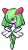

-
Bulbasaur #001

- Grama
- Veneno
Há uma semente de planta em suas costas desde o dia que este Pokémon nasce. A semente cresce lentamente.
-
Ivysaur #002

- Grama
- Veneno
Quando o bulbo em suas costas cresce, parece perder a capacidade de ficar de pé em suas patas traseiras.
-
Venosaur #003

- Grama
- Veneno
Sua planta floresce quando está absorvendo energia solar. Ele permanece em movimento para buscar a luz solar.
-
Charmander #004

- Fogo
Tem preferência por coisas quentes. Quando chove, diz-se que o vapor jorra da ponta de sua cauda.
-
Charmeleon #005

- Fogo
Oponentes fortes excitam este Pokémon, fazendo-o lançar chamas branco-azuladas que incendeiam seus arredores.
-
Charizard #006

- Fogo
Seu sopro de fogo é capaz de derreter rochas e geleiras enormes, e é conhecido por causar incêndios florestais acidentalmente.
-
Squirtle #007

- Água
A casca de Squirtle é uma ferramenta útil. Ele pode se retirar para dentro da concha para proteção ou para dormir.
-
Wartortle #008

- Água
Tem olhos castanhos, uma faixa azul escura em cada bochecha e dois dentes afiados saindo de sua mandíbula superior.
-
Blastoise #009

- Água
Dois poderosos canhões de água residem no topo de sua concha sobre seus ombros. Esses canhões podem ser estendidos ou retirados.
-
Clara #0010
- Fada
Trata-se de uma dançarina que encanta a todos com sua performace de tirar o fôlego, mas não se engane com o rostinho bonito, ela pode te dar muita dor de cabeça!